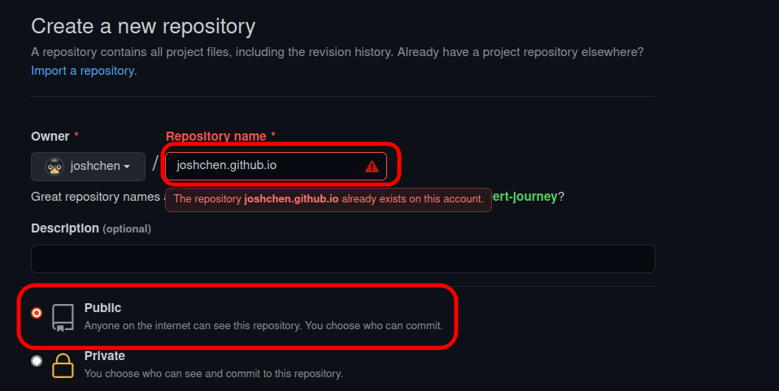
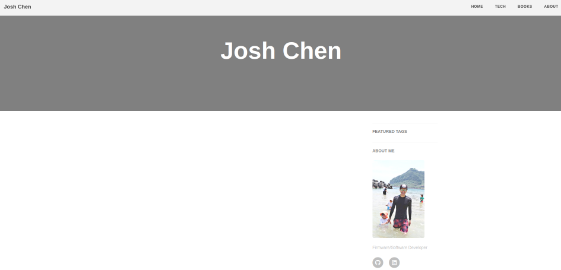

Introduction
This page demonstrates how to use Hugo and github to build your personal web page.
Setup Hugo
- Install HUGO on Ubuntu by this command
sudo apt install hugo
- Create new website named myblog
hugo new site myblogit shows:
Congratulations! Your new Hugo site is created in /home/jc/myblog.
Just a few more steps and you’re ready to go:
- Download a theme into the same-named folder. Choose a theme from https://themes.gohugo.io/ or create your own with the “hugo new theme
” command. - Perhaps you want to add some content. You can add single files with “hugo new
/ . ”. - Start the built-in live server via “hugo server”.
Visit https://gohugo.io/ for quickstart guide and full documentation.
A folder ‘~/myblog’ is created.
- Choose a theme from https://themes.gohugo.io/. You can get more details by right-click. Add the Hugo theme by ‘git submodule. Here is using hugo-theme-cleanwhite for example.
cd ~/myblog
git init
git submodule add https://github.com/zhaohuabing/hugo-theme-cleanwhite.git themes/hugo-theme-cleanwhite
-
Run example site from the root of themes/hugo-theme-cleanwhite/exampleSite: e.g. ~/myblog/themes/hugo-theme-cleanwhite/exampleSite
hugo server --themesDir ../.. -
Check with browser Use web browser to connect http://localhost:1313, and then you should be able to see the the page with hugo-theme-cleanwhite theme.
-
Stop server Use
Ctrl + Cto stop server. -
Update all submodules if you need in the future. From the root of your site, e.g. ~/myblog here.
git submodule update --remote --merge
Start to Add Something for Yourself
- Add new page
cd ~/myblog/
echo 'theme = "hugo-theme-cleanwhite"' >> config.toml
hugo new posts/my-first-post.md
echo 'Hello' >> content/posts/my-first-post.md
hugo server -D # -D is to show draft page
Read the page via browser at http://localhost:1313/posts/my-first-post/
- Change favicon if you want
It depends on the theme you use.
For hugo-theme-cleanwhite, put your favicon.ico to
static/img/favicon.ico
Push to pages.github.io
Follow this https://pages.github.com/ to create ${username}.github.io. e.g. joshchen.github.io. and push it main branch.
-
Create ${username}.github.io ( Must be “Public” repository) 
-
Generate ‘public’ folder by Hugo, the command is hugo .
-
Then push it to your ${username}.github.io. Here is the reference commands:
cd ~/myblog/public
git init
git add origin https://github.com/joshchen/joshchen.github.io.git
git push origin main
- Use web browser to see the page under https://joshchen.github.io/en/index.html 